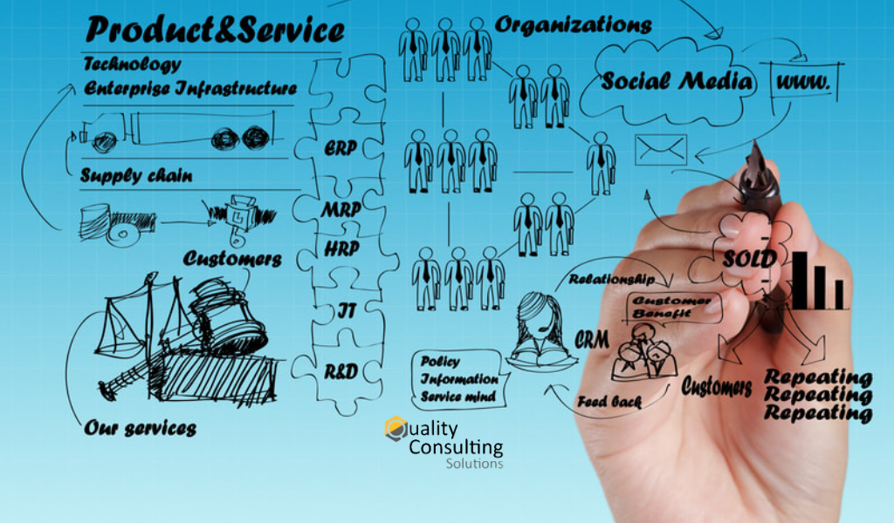

REDUCCIÓN DE LA VARIABILIDAD DE RESULTADOS
En Quality Consulting Solutions evaluamos y estructuramos la estandarización de los procesos constructivos y de ingeniería para reducir drásticamente la dispersión y variabilidad de los resultados en obra.
Nuestro enfoque se centra en dotar a los equipos de herramientas de aseguramiento y control que sean verdaderamente prácticas, eliminando la sobrecarga burocrática y garantizando que cada entregable cumpla con las especificaciones técnicas desde la primera vez.
Ayudamos a tu organización a encontrar el equilibrio óptimo entre el rigor documental y la agilidad de ejecución en campo, asegurando la trazabilidad total requerida por clientes y supervisores.
Manuales de Calidad
Políticas, alcance y directrices claras de gestión adaptadas a la escala y tipo de obra, sin exceso de teoría.
Planes de Calidad
Protocolos de Inspección y Ensayo (PIE) y matrices de responsabilidades por especialidad constructiva.
Formatos de Control
Listas de chequeo y protocolos de liberación ágiles, fáciles de llenar y verificar en campo por la supervisión.
Herramientas a Medida
Dashboards dinámicos para el seguimiento en tiempo real de No Conformidades (RNC) y dossier de calidad.
AUDITORÍA DE LA GESTIÓN DE LA CALIDAD
Realizamos auditorías técnicas especializadas directamente en obra para diagnosticar el estado real del sistema de calidad, verificando la trazabilidad de materiales, ensayos de laboratorio y liberación de frentes de trabajo.
Examinamos las causas de las no conformidades recurrentes y evaluamos el grado de cumplimiento de los protocolos contractuales para prevenir contingencias durante la recepción de la obra.
Las observaciones no levantadas a tiempo y los vacíos en el dossier de calidad impiden la firma de actas de recepción, demorando valorizaciones finales y liquidaciones contractuales.
Inspección In Situ
Validación de tolerancias constructivas y contrastación física frente a planos vigentes.
Dossier Continuo
Armado progresivo del expediente técnico final para una entrega fluida al cliente.
Auditoría en Campo: Verificación rigurosa de protocolos de liberación, trazabilidad de concreto, aceros e instalaciones en obra.
MEJORA CONTINUA Y CAUSA RAÍZ
Corregir el síntoma no evita que el error se repita. Aplicamos metodologías estructuradas de análisis de causa raíz (Ishikawa, 5 Porqués) para identificar el origen sistémico de los defectos constructivos.
Al transformar cada no conformidad en una lección aprendida documentada, blindamos los siguientes frentes de trabajo y transferimos el conocimiento a toda la organización para reducir costos por retrabajos.

Gestión del Conocimiento: Documentación sistemática de lecciones aprendidas y actualización continua de los estándares operativos.
POSTVENTA COMO OPORTUNIDAD DE MEJORA
La postventa no debe ser solo un centro de atención a reclamos, sino la fuente primaria de datos para retroalimentar la ingeniería y los procesos constructivos.
¿Tu organización conoce la frecuencia de ocurrencia de sus defectos?
Sin una clasificación estadística rigurosa, los mismos errores de acabado e instalaciones se repiten de obra en obra, absorbiendo márgenes de utilidad en costos de garantía.
¿Existe un flujo efectivo para compartir las lecciones recogidas en postventa?
La desconexión habitual entre los equipos de atención de garantías y los ingenieros de producción impide corregir las causas de raíz durante la etapa de construcción.
¿Qué medidas preventivas se toman a partir de la información obtenida?
Ayudamos a convertir los datos históricos de postventa en modificaciones directas a los protocolos de control, especificaciones de compra y capacitación de subcontratistas.
Panel de Control de Postventa & Defectología
Monitoreo PredictivoLOS 4 PILARES DE LA GESTIÓN DE LA CALIDAD
Una propuesta integral diseñada para acompañar a tu empresa desde la estandarización documental inicial hasta el control de calidad en campo y la gestión de postventa.
1. Gestión de la Calidad
Estandarización de procesos, elaboración de manuales de calidad, planes de aseguramiento (PAQ) y diseño de formatos de control útiles, adaptados a la realidad de la obra.
2. Auditoría Técnica
Evaluación independiente en campo del estado real de la calidad, trazabilidad de materiales, cierre oportuno de observaciones y preparación del dossier final.
3. Mejora Continua
Análisis sistemático de causa raíz ante no conformidades, implementación de acciones correctivas de fondo y registro estructurado de lecciones aprendidas.
4. Postventa
Estudio estadístico de defectología, paneles de control predictivos y retroalimentación directa a los equipos de compras y construcción para evitar reincidencias.